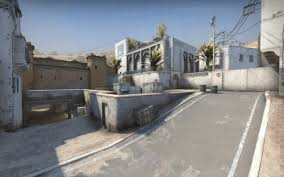
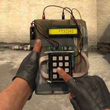
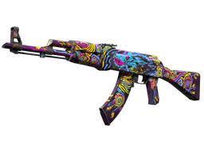

A Counter-Strike: Global Offensive (CS) az egyik legismertebb és legnépszerűbb taktikai lövöldözős játék, amely évek óta hatalmas közönséget vonz világszerte. Az 2012-es megjelenése óta a játék nemcsak a kompetitív e-sport világában szerzett nevet, hanem a casual játékosok körében is komoly rajongótáborra tett szert. A CS a Counter-Strike sorozat negyedik részeként örökölte a széria hagyományait, miközben számos újítást is hozott, hogy még inkább megfeleljen a modern játékipari igényeknek.
A CS egy első személyű lövöldözős játék, amely elsősorban a csapatmunkára és a taktikai gondolkodásra épít. A játékosok két csoportra szakadnak: a terroristákra (T) és az antiterroristákra (CT). A fő cél általában a bomba elültetése és felrobbantása, vagy éppen a bomba megakadályozása és a terroristák semlegesítése, attól függően, hogy melyik oldalon játszanak.
A játék különböző játékmódokkal rendelkezik, de a legnépszerűbb a Bomb Defusal mód, amelyben a terroristák megpróbálják elültetni a bombát a térképen kijelölt helyszínek egyikén, míg az antiterroristák igyekeznek megakadályozni őket. A mérkőzés körökre van osztva, és minden egyes kör elején a játékosok pénzt keresnek az előző kör teljesítménye alapján. A megszerzett pénz lehetővé teszi számukra a fegyverek, gránátok és páncélok vásárlását a következő körre. A megfelelő fegyverek és taktikai eszközök kiválasztása kulcsfontosságú a sikerhez.
A CS nem csupán egy egyszerű lövöldözős játék. A sikerhez elengedhetetlen a csapatmunka, a kommunikáció és a taktikai előrelátás. A legjobb csapatok nem csupán a gyors reakcióidővel és pontos lövésekkel győznek, hanem képesek olyan stratégiák kialakítására, amelyek kihasználják az ellenfelek gyengeségeit. Az alapvető taktikák közé tartozik például a „smoke” (füstgránát) használata a látótér blokkolására, vagy a „flashbang” (villanógránát) a helyzetek előnyös megváltoztatására.
Ezen kívül az időzítés és a pályaismeret is kulcsfontosságú. Mivel minden pálya más-más kihívásokat állít a játékosok elé, a sikeres csapatoknak jól kell ismerniük a különböző pályákat, és gyorsan kell tudniuk reagálni az ellenfél mozgásaira. Az egyes pályák sajátos tervezése, mint például az A és B bombhelyek, a különböző szűk folyosók és nyílt terek mind befolyásolják a játékmenetet, így a csapatoknak megfelelően kell alkalmazkodniuk.
 A CS-nek egyik legérdekesebb része a fegyverskinek amelyek díszítések/átfestések, ezek a skinek igazi pénzt is érnek, de igazi pénzt is kell hozzá költeni, a skineket casekből tudod megszerezni, külömböző skinekre különböző esélyed van, hogy megszerezd, példáúl az alábbi kép egy piros (ritka) skin, amely nekem megvan a játékban.
A CS2 a legújabb verziója a Counter Strike szériának, és az amivel én is játszom.